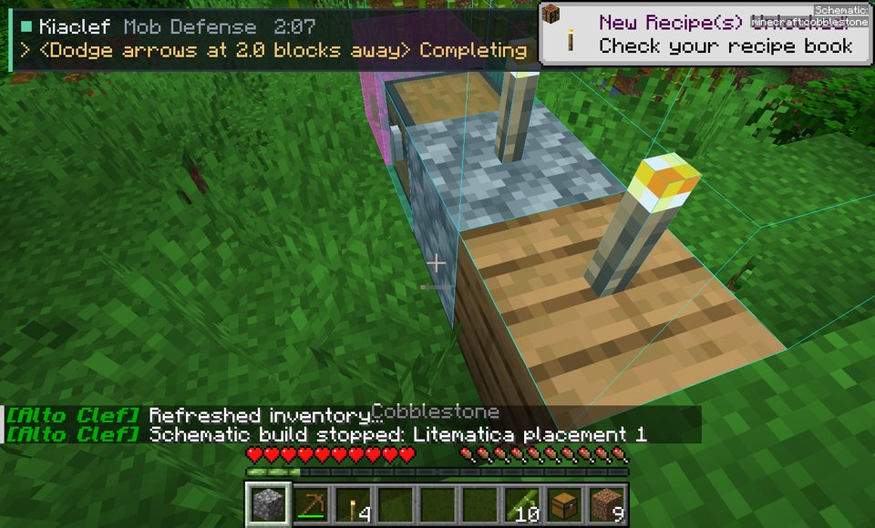
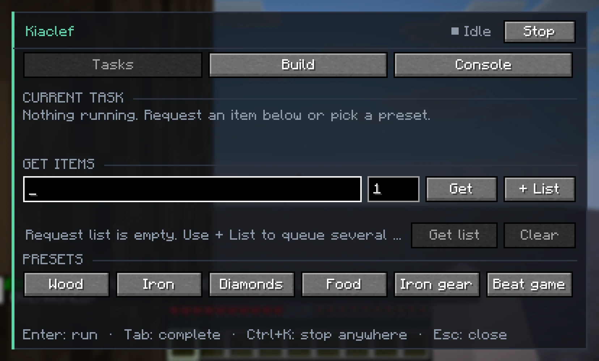
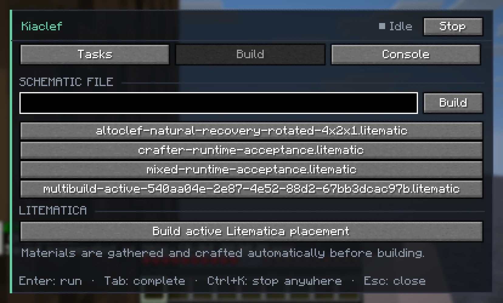
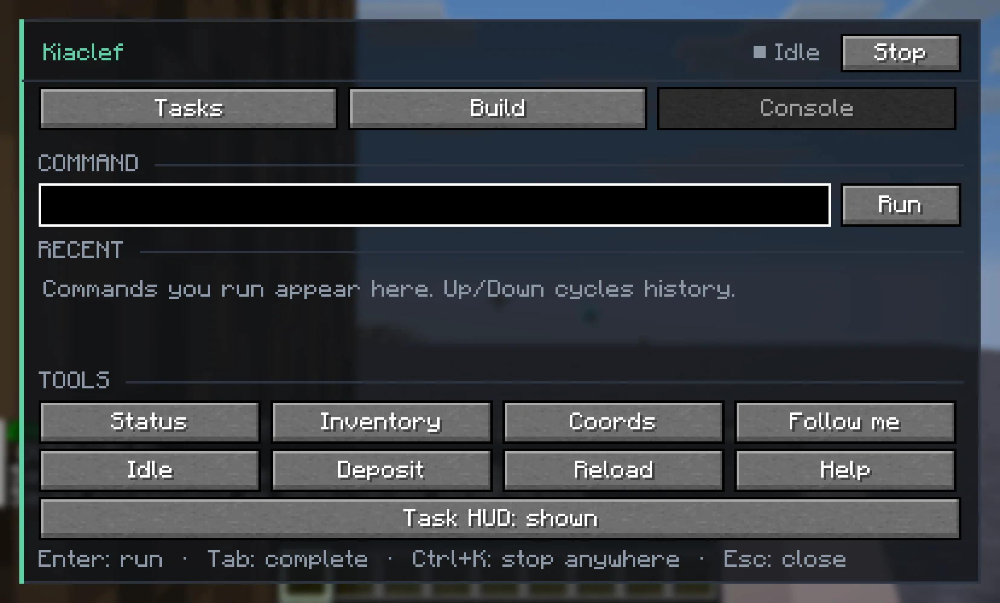
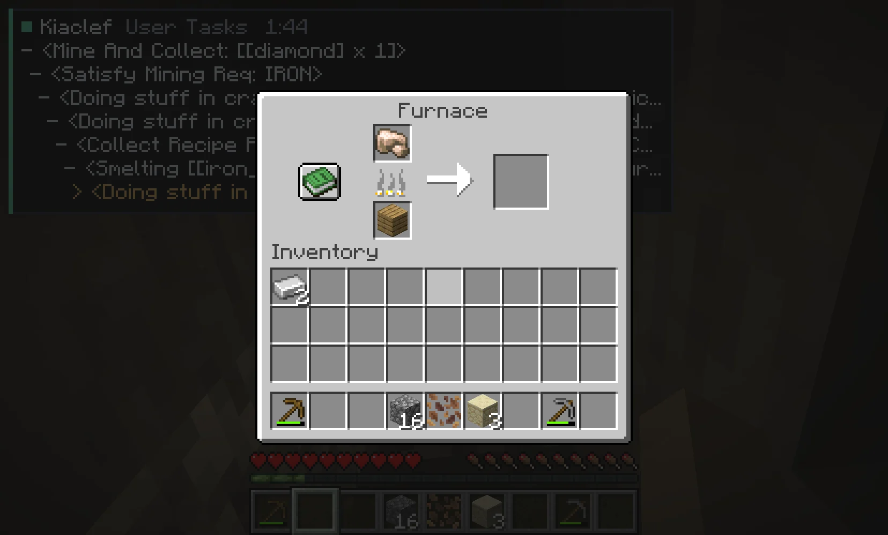

Ask for diamonds.It does the rest.
Kiaclef is a Minecraft 26.2 bot that gathers, crafts and builds on its own. A fork of AltoClef.
One command.
Every step worked out.
- Chop a treeLogs from the nearest trunk
- Craft the basicsPlanks, sticks, a crafting table
- Wooden pickaxeEnough to break stone
- Upgrade to stoneCobblestone into a stone pickaxe
- Find iron oreTracked, pathed to, mined
- Smelt itFurnace and fuel from what it carries
- Iron pickaxeThe tier diamonds need
- Mine the diamondDone. Back to you.
Not a mockup.
A real run on a fresh world, sped up. Empty inventory to diamond, with the live task chain in the corner.
Hand it a whole shopping list.
Ask for several things at once. It plans shared ingredients once, gathers what is missing and crafts the rest.
@get [chest 2, stick 4, torch 8]
Builds it, too.
Point it at a Litematica placement or a schematic file. It counts the materials, gathers and crafts them, then places every block.
Something shoots at it? It dodges, then picks the build back up where it left off.

Everything from one panel.
See what it is doing and request items with autocomplete, lists and presets.
Pick a schematic from your folder, or build the active Litematica placement.
Run any command with history, plus one-click tools. Ctrl+K stops everything.



Tested in real games.
unit tests passing, plus automated sessions in the packaged game on freshly generated worlds.
Passed end to end
- Diamond from an empty inventory, untouched terrain
- Item lists in a natural world
- Litematica build with mid-build recovery
- Chest loot, deposit, stash and stacking
- Kelp to dried kelp block from scratch
- Control panel and HUD

Still rough
Night survival is weak: it reacts late to creepers and Drowned. Speedruns, natural Nether travel and multiplayer are untested.
Built on great open source.
Let it play.
Download 1.0.0- InstallFabric Loader 0.19.5+ for Minecraft 26.2
- AddFabric API 0.154.2+26.2
- Drop
kiaclef-1.0.0.jarintomods, then press J in-game
SHA-256 d20f06011e64072b9b8c65dba770561ed49373aee647d4710983dea4567157ec